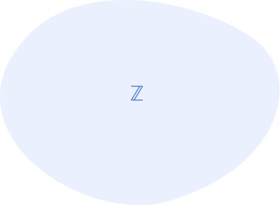
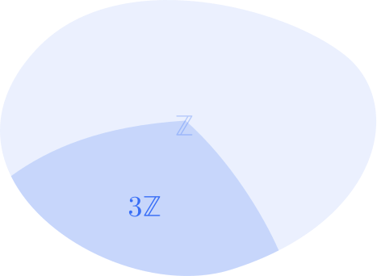
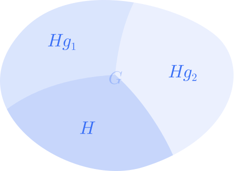
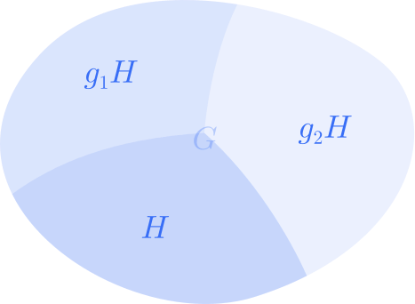
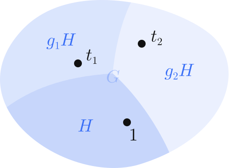

If \(G\) is a finitely generated group, TFSAE:
(i) \( WP(G) \in \mathcal{CF} \)
(ii) \( WP(G) \in \mathcal{DCF} \)
(iii) \( G \) is virtually free
If \(G\) is a finitely generated group, TFSAE:
(i) \( WP(G) \in \mathcal{CF} \)
(ii) \( WP(G) \in \mathcal{DCF} \)
(iii) \( G \) is virtually free
virtually free (iii) \(\implies\) \(\in \mathcal{DCF}\) (ii)
a group is virtually free if it has a free subgroup of finite index (remember “free” = no relators)
the index of a subgroup \(H\subseteq G\) is the number of equivalence classes it has in \(G\) (by left-side or right-side operation), denoted \(|G:H|\)
each equivalence class of a subgroup \(H\subseteq G\) is called a coset of \(\boldsymbol{H}\); notably, each coset that is not \(H\) will not be a subgroup
each equivalence class of a subgroup \(H\subseteq G\) is called a coset of \(\boldsymbol{H}\); notably, each coset that is not \(H\) will not be a subgroup
※ We can specify left or right coset if the operation is applied to the left (\(gH\)) or right (\(Hg\)) side, respectively.
In \( G = (\mathbb{Z}, +)\), consider the subgroup
$$ H= \{..., 0, 3, 6, 9, 12, ...\} $$What are the cosets of \(H\) in \(G\)?
\( \{ ...,0,3,6,9,12,...\} = H \)
\( \{ ...,1,4,7,10,13,...\} = H+1 \)
\( \{ ...,2,5,8,11,14,...\} = H+2 \)
\( \left. \begin{aligned} \phantom{.} \\ \phantom{.} \\ \phantom{.} \end{aligned} \right\rbrace \) index of \(H\) is \( |G:H| = 3\)




\( |G| = |G:H| |H|\) size of \(G\) = index of \(H\) \(\times\) size of \(H\)
\( G=\bigcup Hg_i \) the cosets of \(H\) form a disjoint partition of \(G\); equivalently, \( G\) is the disjoint union of all cosets of \(H\)
index can be infinite (for example, \(|\mathbb{R} : \mathbb{Z}| = \infty\) )
index does not change if you consider left or right cosets (depending on the sets, what is contained in each coset might differ, but the number of cosets doesn't change)
a transversal \(\boldsymbol{T}\) of a subgroup \(H\subseteq G\) is a set with one element from each coset (like a set of equivalence class representatives)
\( T=\{t_0,t_1,t_2,... \mid t_i\in Hg_i \} \)
